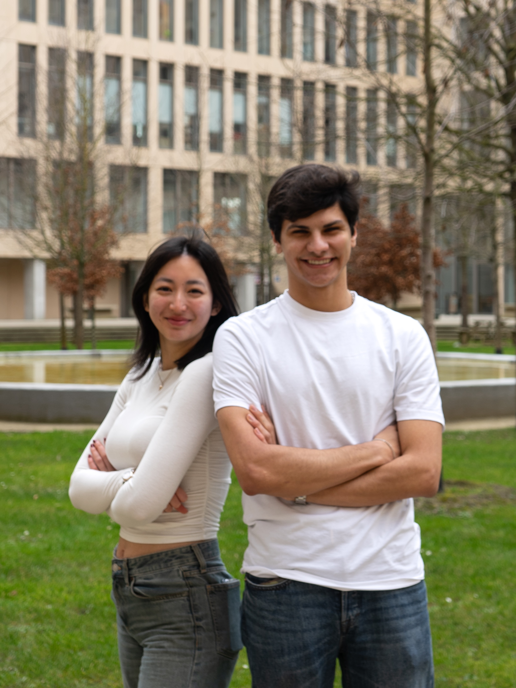

Notre mission au pôle Relations Télécom et Entreprises
Anciennement pôle RE, renommé pôle RTE depuis 2025, ces membres se chargent de faire connaître notre association aux entreprises, mais aussi de gérer nos relations avec l’administration et le pôle RE de Télécom Paris.